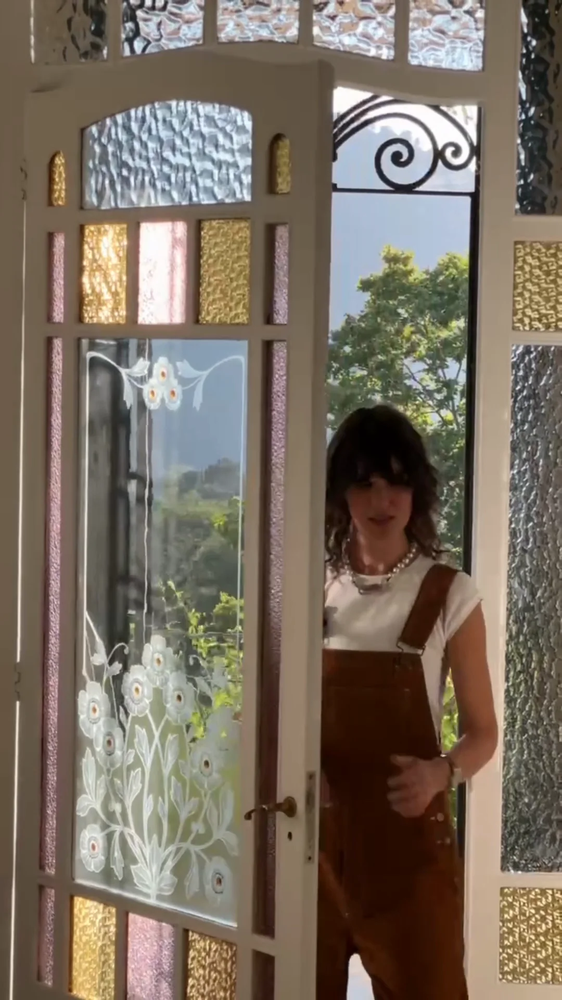

Я хочу разобраться со своим пространством
Хочу научиться читать его как систему, увидеть причины своих проблем и найти решения, которые будут поддерживать меня и мою семью.

Флагманский курс «Васту-дизайн» Анны Ромео
Научитесь читать пространство как систему и создавать дома, которые работают на ваше благополучие.
С чего всё начинается
Ты не можешь понять, почему в жизни застой — в деньгах, в отношениях или в здоровье, — потому что ищешь причину только в себе, а не в квартире, в которой живёшь.
Все идут к психологу, финансовому консультанту или врачу по отдельности, но это не работает, потому что на все сферы жизни влияет энергия дома.
Нужно смотреть на дом как на карту. Что происходит в жизни — видно по тому, что происходит в пространстве. Одно точное изменение вроде перестановки мебели или перекраски стены способно улучшить сразу несколько сфер.
На курсе вы научитесь диагностировать причины жизненных проблем через интерьер и создавать дома, которые работают на вас.
Мы неосознанно создаём пространство вокруг себя в полном соответствии с нашими внутренними установками. Подсознательно мы транслируем их вовне, а затем каждый день живём внутри того, что создали.
Свет, цвет, расположение мебели, свободная площадь и абсолютно каждая мелочь становятся частью нашего повседневного состояния.
Это напрямую влияет на всё наше «колесо баланса»: на то, как мы зарабатываем деньги, строим отношения, заботимся о здоровье, отдыхаем, концентрируемся и взаимодействуем с окружающими.
Не «переставили диван и ждём чуда», а точное изменение в точной зоне — с пониманием, зачем оно здесь.
Пространство перестаёт работать против вас.
Часто гораздо легче и проще, чем вы привыкли добиваться их раньше.
Можно знать десятки правил Васту — и при этом не уметь эффективно гармонизировать пространство, чтобы оно наконец начало работать на человека.
Просто прочитать карту и найти причины проблем — это лишь начало. Главное — понимать, как всё это исправить. Нельзя оценить один сектор или отдельный элемент интерьера вне всего пространства.
На курсе мы учимся анализировать пространство целиком и видеть прямую взаимосвязь: как блоки в физическом интерьере отражаются результатами в конкретных сферах вашей жизни. Мы видим ориентацию, геометрию, визуальный вес, каждую деталь наполнения — и учимся это гармонизировать.
Найдите себя — и вы увидите, каким именно инструментом Васту станет лично для вас.
Хочу научиться читать его как систему, увидеть причины своих проблем и найти решения, которые будут поддерживать меня и мою семью.
Я уже создаю современные пространства и хочу добавить в свою деятельность больше смысла, глубины и ценности.
Астролог, психолог, нумеролог. Для вас Васту станет мощным дополнительным инструментом диагностики состояния человека. Чтобы разобраться в проблемах клиента, вы сможете дополнительно анализировать его дом.
Хочу научиться работать с пространствами других людей и сделать это новой специализацией.
Диагностировать → корректировать → создавать Васту-дизайн.
Самостоятельно строить Васту-карту.
Сопоставлять карту с реальными фотографиями и видео жилья — диагностировать только по «голой» схеме нельзя.
Видеть сильные, слабые и конфликтующие зоны, читая взаимосвязь между проблемами в жизни человека и его интерьером.
Делать точечные корректировки, если у человека есть острый запрос и что-то «болит» прямо сейчас.
Комплексно гармонизировать пространство, чтобы оно повышало общий уровень жизни и улучшало судьбу.
Выбирать гармоничную квартиру или дом с нуля.
Подбирать современные, эстетичные способы гармонизации и собирать полноценный Васту-дизайн.
Один объект — четыре слоя
Разница между сухим взглядом на чертёж и глубоким анализом реальной среды — вот она. Переключайте слои.
Начинаем с геометрии: реальный контур, ориентация по сторонам света, границы зон. Здесь ещё не видно ничего о жизни человека — только структура.
Тот же объект глазами человека, который в нём живёт. Появляются свет, тени, визуальный вес, реальная мебель, накопленные вещи и настоящие сценарии дня. Диагностировать только по схеме — нельзя.
Соединяем карту и реальность. Видим, какие зоны работают, какие заблокированы и какие конфликтуют между собой — и как именно это отражается на конкретных сферах жизни человека.
Ограничения объекта известны, причины найдены — собираем решение интерьерными инструментами: цвет, свет, материалы, форма мебели, живопись, растения. Красиво и обоснованно: у каждого решения есть причина.
Курс работает с существующим объектом — от готового интерьера до стадии перепланировки.
Хороший, дорогой ремонт существует, и ломать стены никто не будет. Мы учимся гармонизировать дом с помощью мелких и эстетичных методов коррекции: через изменение функции зон, свет, текстиль, зеркала, картины и растения.
Здесь возможностей больше: можно заранее учитывать принципы Васту при распределении функциональных зон, планировочных решениях и в будущем дизайне интерьера.
Проектирование дома с нуля — это следующая ступень. Подробнее ниже →
Васту, встроенное в реальное современное пространство.
В основе подхода — классические принципы Васту, соединённые с опытом архитектурной и дизайнерской практики. Васту работает первично через само пространство, поэтому мы не закладываем артефакты в пол и не портим интерьер.
В работе используются исключительно интерьерные инструменты: цвет, свет, материалы, форма мебели, живопись, искусство и растения. Важно понимание, зачем конкретный цвет или предмет нужен именно здесь.
Автор курса
Архитектор, дизайнер интерьеров, Васту-архитектор.
Короткие истории работы с пространством: что было, что показал анализ, какие были ограничения и что изменилось.
Программа
Шесть шагов — от «почему пространство вообще на меня влияет» до собственного гармонизированного дома.
Понять, почему пространство на нас влияет, как работают энергии и почему всё это взаимосвязано в единую систему.
Технически создать Васту-карту — самостоятельно, для своего реального объекта.
Понять баланс, перекосы и причины жизненных ситуаций.
Освоить алгоритм и огромный диапазон мелких, доступных методов коррекции.
Это доступно не только профессиональным дизайнерам. Любой человек научится переводить принципы Васту в цвет, формы и композицию.
Практика на собственной Васту-карте своего пространства.
Мы не делаем сухие «практические работы» — вы выполняете понятные домашние задания и гармонизируете свою собственную квартиру прямо в процессе курса.
Не только знания — конкретный результат работы.
Собственная построенная и продиагностированная карта вашего пространства.
Практический навык анализа любого помещения — своего и чужого.
Собранное дизайн-решение и гармонизированное собственное пространство уже в процессе обучения.
Участие
Оба тарифа дают полную систему. Разница — в том, останется Васту вашим личным инструментом или станет профессией.
Основной
Идеален для себя и для внедрения в текущую профессию. Вы опробуете всю систему на себе и гармонизируете свой дом.
Бронирование ни к чему не обязывает.
Практик
Личный разбор вашего проекта с Анной.
Всё из основного тарифа плюс профессиональный контур: бизнес-блок и дипломная работа с защитой.
Бронирование ни к чему не обязывает.
| Что входит | Основной | Практик |
|---|---|---|
| Все уроки курса | ✦ | ✦ |
| Еженедельные прямые эфиры | ✦ | ✦ |
| Проверка домашних заданий | ✦ | ✦ |
| Чат группы | ✦ | ✦ |
| Разборы квартир участников | ✦ | ✦ |
| Практика на собственном пространстве | ✦ | ✦ |
| Бизнес-блок: заказчик, цены, замеры | — | ✦ |
| Личный разбор проекта с Анной | — | ✦ |
| Дипломный проект и защита | — | ✦ |
| Доступ к материалам | от 6 до 12 месяцев | от 6 до 12 месяцев |
| Количество мест | не ограничено | 15 |
| Ранняя стоимость | 55 000 ₽ | 155 000 ₽ |
| Стоимость после 22 сентября | 75 000 ₽ | 175 000 ₽ |
Курс «Васту-дизайн» — первая ступень целостной системы обучения.
Он работает с существующим пространством: от готового интерьера до стадии перепланировки. После того как вы научитесь диагностировать и гармонизировать то, что уже построено, можно продолжить обучение на углублённой ступени — проектирование дома и участка с нуля, расширенная диагностика, сакральная геометрия и другие профессиональные уровни.
До 22 сентября 2026 участие доступно по цене 55 000 ₽ на основном тарифе и 155 000 ₽ на тарифе «Практик». После этой даты стоимость составит 75 000 ₽ и 175 000 ₽ соответственно.
Бронирование ни к чему не обязывает: мы свяжемся с вами, ответим на вопросы и поможем выбрать тариф.
Вопросы
Это пространство, которое можно научиться видеть, понимать и создавать осознанно.
Флагманский курс «Васту-дизайн» Анны Ромео · старт 6 октября · 2,5 месяца · ранняя стоимость от 55 000 ₽
Бронирование ни к чему не обязывает.
Заявка отправлена
Спасибо! Мы свяжемся с вами в ближайшее время и пришлём детали по оплате и старту потока.